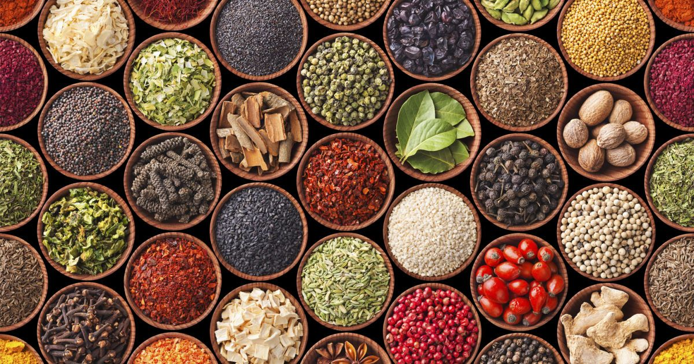
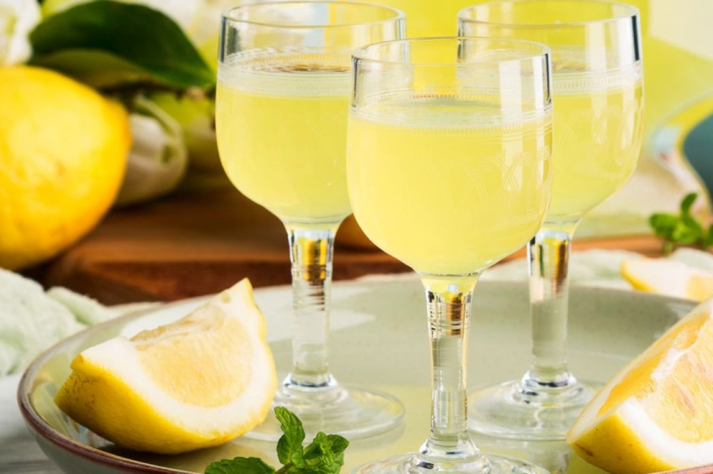

Прянощі.
Правильне поєднання спецій робить настоянку особливою. Наприклад:
- Кориця + яблуко — теплий та солодкий осінній смак
- Імбир + лимон + мед — освіжаюча та корисна комбінація
- Гвоздика + апельсин — глибокий аромат із цитрусовими нотами
- Кардамон + ваніль — м'який та витончений смак.

Алкогольна основа.
Головні вимоги до алкогольної основи:
- Висока якість очищення
- Нейтральний смак
- Правильна міцність
- Відсутність сторонніх запахів
Добре підібрана основа робить настоянку м’якою, ароматною та збалансованою.

Тара та аксесуари.
Для приготування та зберігання настоянок також використовують різні аксесуари:
- Cкляні пляшки для зберігання
- Герметичні пробки та кришки
- Лійки для зручного переливання
- Фільтри для очищення настоянок
- Мірні стакани
Гарна тара не тільки зберігає якість напою, але й робить настоянки естетичними та привабливими, особливо якщо вони подаються як подарунок або брендований продукт.